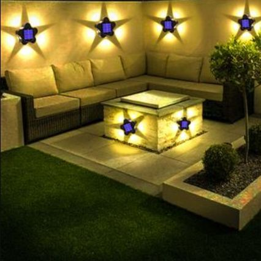
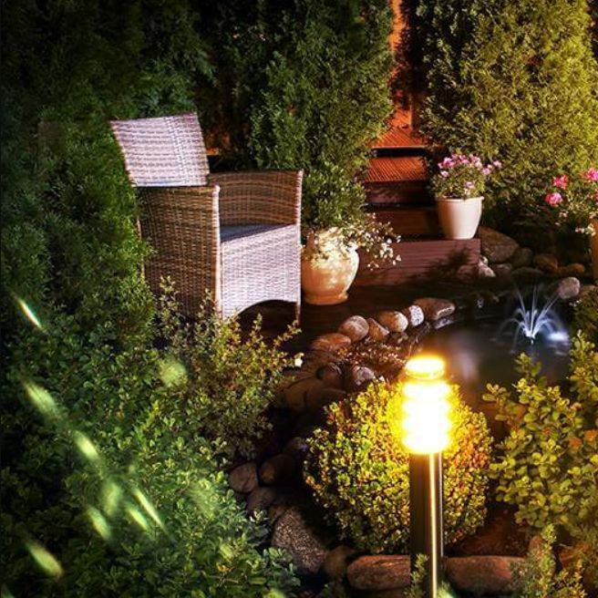

Éclairage de Jardin par LucasJardin
Transformez votre jardin en un espace enchanteur, même après le coucher du soleil. Chez LucasJardin, nous concevons et installons des systèmes d'éclairage sur mesure pour mettre en valeur vos espaces verts tout en assurant sécurité et ambiance.
Nos Solutions d'Éclairage
Éclairage d'Ambiance
Créez une atmosphère chaleureuse avec des lumières douces et tamisées. Idéal pour les terrasses, les allées et les zones de détente.
Éclairage Fonctionnel
Assurez la sécurité de vos déplacements avec un éclairage puissant pour les escaliers, les portails et les chemins.
Éclairage Décoratif
Mettez en valeur les éléments clés de votre jardin : arbres, sculptures, bassins d'eau, etc. avec des projecteurs et des spots design.

Pourquoi Choisir LucasJardin ?
- Éclairage personnalisé adapté à vos besoins
- Utilisation de matériaux durables et économes en énergie
- Installation professionnelle et garantie
- Service après-vente réactif et fiable
Prêt à Illuminer Votre Jardin ?
Contactez-nous dès aujourd'hui pour un devis gratuit et sans engagement. Notre équipe est à votre disposition pour discuter de votre projet.
Demander un Devis